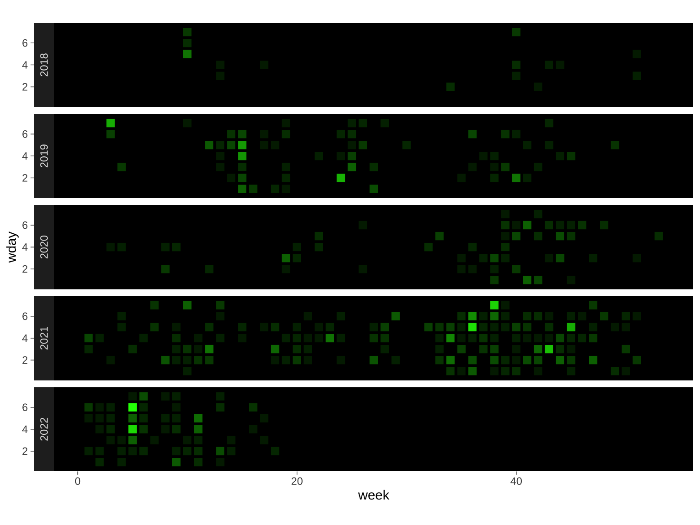

23 Tiles
I really love the github activity tile graphs. For today’s plot, I’m going to use the methods from Day 21 the get data to make a similar plot, but showing all of the commits to repositories from the psyTeachR team.
23.1 Data
I need to use the GitHub API to get all the commit dates for the psyTeachR team.
23.1.1 Get repo names
Code
[1] "webex" "trdair_workshop" "shiny-tutorials"
[4] "mms" "fossos" "psyteachr.github.io"
[7] "R.House.2019" "ug3-stats" "msc-data-skills"
[10] "ug2-practical" "book-template" "hack-your-data"
[13] "glossary" "misc" "sips2019"
[16] "books" "ug1-practical" "FAQ"
[19] "assessr-book" "msc-conv" "handyworkbook"
[22] "markr" "introdataviz" "stat-models-v1"
[25] "reprores-v2" "psyteachr" "analysis-v2"
[28] "tutorials-old" "ads-v1" "template" 23.1.2 Forks
Most of the team work mainly in a fork on their own account and commit to the psyteachr origin rarely, so to get a clear picture of the work that the team does, we’ll also need to find all the forks.
We could get the members of the psyTeachR organisation through the GitHub API, but most haven’t made their membership public, so I’m just hard-coding their account names. We’ll use the psyteachr_forks list later.
Code
forks <- readRDS("data/forks.rds")
members <- c("BertlettJE", "carolinakt", "clelandwoods",
"dalejbarr", "debruine", "eavanmac",
"emilynordmann", "HelenaPaterson", "JackEdTaylor",
"philmcaleer", "shannon-mcnee")
psyteachr_forks <- forks %>%
select(full_name) %>%
separate(full_name, c("user", "repo"), sep = "/") %>%
filter(user %in% members)23.1.3 Get commits
Get the commits for one repo first to see how they’re structured. I’ll choose the first ever psyTeachR group repo, called “R.House.2019”, which we made on a trip to Islay for a long weekend to learn git (and drink whisky) and actually did stay in an airBnB that was an R.House.
There’s a lot of data here, so let’s just extract the author, message and date for each commit.
Code
List of 3
$ author : chr "debruine"
$ message: chr "renamed files"
$ date : chr "2019-01-19T11:31:03Z"23.1.4 Iterate
Now we just need to do this for every commit in every repository.
First, iterate over repos. You’re limited to 60 requests per hour without authenticating, which I don’t have time to figure out right now, so make sure you save this so you don’t lose it and set the code chunk to eval = FALSE or comment it out so you don’t accidentally run it again.
Code
# create API URLs for repos and forks
ptr_urls <- glue("https://api.github.com/repos/psyTeachR/{psyteachr_repos$name}/commits")
fork_urls <- glue("https://api.github.com/repos/{psyteachr_forks$user}/{psyteachr_forks$repo}/commits")
urls <- c(ptr_urls, fork_urls)
# get commit info for each repo
psyteachr_commits <- map(urls, read_json)
# save to RDS object
saveRDS(psyteachr_commits, "data/psyteachr_commits.rds")Iterate over all the repos and commits. Add columns with the date formatted as a date, year, week, and weekday.
Code
psyteachr_commits <- readRDS("data/psyteachr_commits.rds")
commit_info <- map_df(psyteachr_commits,
function(commits) {
# iterate over commits for this repo
map_df(commits, function(commit) {
list(
author = commit$commit$author$name,
message = commit$commit$message,
date = commit$commit$committer$date,
url = gsub("(https\\://api\\.github\\.com/repos/|/commits/.*)", "", commit$url)
)
})%>%
separate(url, c("user", "repo"), sep = "/")
}) %>%
# process versions of the date column
mutate(date = lubridate::as_date(date),
year = year(date),
week = week(date),
wday = wday(date))23.2 Plot
23.2.1 Inital Plot
The first plot is usually pretty horrific, but this isn’t too bad.
23.2.2 GitHub Theme
We can make this closer to the GitHub theme by fixing the coordinates so the tiles are square, making the panel backgrounds black, and getting rid of the grid lines. We can also free up a little more vertical space by putting the facet labels on the left. Add a black border to the tiles with size = 1.
Code
commits_by_day %>%
ggplot(aes(x = week, y = wday, alpha = n)) +
geom_tile(fill = "green", color = "black",
size = 1, show.legend = FALSE) +
facet_wrap(~year, ncol = 1, strip.position = "left") +
coord_fixed() +
theme_dark() +
theme(
panel.background = element_rect(fill = "black"),
panel.grid = element_blank()
)
23.2.3 Add months
The weeks of the year line up nicely, but don’t exactly correspond to months, so I’m going to hack this a little. I’ll add a secondary axis that rescales the weeks of the year to a 0.5 to 12.5 scale. The extra 0.5 is so the breaks can be set to 1:12 and the names of the month can go approximately in the middle of the month. I set position to “top” so the month axis would be on the bottom and I can hide the top axis (and some other parts we don’t need) using theme().
I also refactored year in the data so that 2022 displays at the top.
Code
commits_by_day$year <- factor(commits_by_day$year, levels = 2022:2018)
commits_by_day %>%
ggplot(aes(x = week, y = wday, alpha = n)) +
geom_tile(fill = "green", color = "black",
size = 1, show.legend = FALSE) +
scale_x_continuous(
position = "top",
sec.axis = sec_axis(
trans = ~scales::rescale(., to = c(0.5, 12.5)),
breaks = 1:12,
labels = lubridate::month(1:12, T)
)
) +
facet_wrap(~year, ncol = 1, strip.position = "left") +
labs(x = NULL, y = NULL) +
coord_fixed() +
theme_dark() +
theme(
panel.background = element_rect(fill = "black"),
panel.grid = element_blank(),
axis.ticks = element_blank(),
axis.text.y = element_blank(),
axis.text.x.top = element_blank()
)23.2.4 PsyTeachR Theme
The psyTeachR books and website have a distinctive rainbow theme.

Set the fill to year and remove the green fill from geom_tile(). Use scale_fill_manual() to set the colours to the first 5 psyTeachR colours. Use scale_alpha() to set the minimum and maximum alpha values.
Code
commits_by_day %>%
ggplot(aes(x = week, y = wday, alpha = n, fill = year)) +
geom_tile(color = "black", size = 1, show.legend = FALSE) +
scale_x_continuous(
position = "top",
sec.axis = sec_axis(
trans = ~scales::rescale(., to = c(0.5, 12.5)),
breaks = 1:12,
labels = lubridate::month(1:12, T)
)
) +
scale_alpha(range = c(0.25, 1)) +
scale_fill_manual(values = ptrc[1:5]) +
facet_wrap(~year, ncol = 1, strip.position = "left") +
labs(x = NULL, y = NULL) +
coord_fixed() +
theme_dark() +
theme(
panel.background = element_rect(fill = "black"),
strip.text = element_text(size = 18, face = "bold"),
panel.grid = element_blank(),
axis.ticks = element_blank(),
axis.text.y = element_blank(),
axis.text.x.top = element_blank()
)23.2.5 Change the facet strip color
I wanted to make the facet strip colour match the year’s tile colour, but it’s trickier than it sounds. I found this StackOverflow answer by utubun.
Code
p <- last_plot()
g <- ggplot_gtable(ggplot_build(p))
strips <- which(grepl('strip-', g$layout$name))
for (i in seq_along(strips)) {
k <- which(grepl('rect', g$grobs[[strips[i]]]$grobs[[1]]$childrenOrder))
l <- which(grepl('titleGrob', g$grobs[[strips[i]]]$grobs[[1]]$childrenOrder))
g$grobs[[strips[i]]]$grobs[[1]]$children[[k]]$gp$fill <- ptrc[i]
g$grobs[[strips[i]]]$grobs[[1]]$children[[l]]$children[[1]]$gp$col <- "black"
}Now you can view the plot with plot(g) or convert it back to a ggplot object.